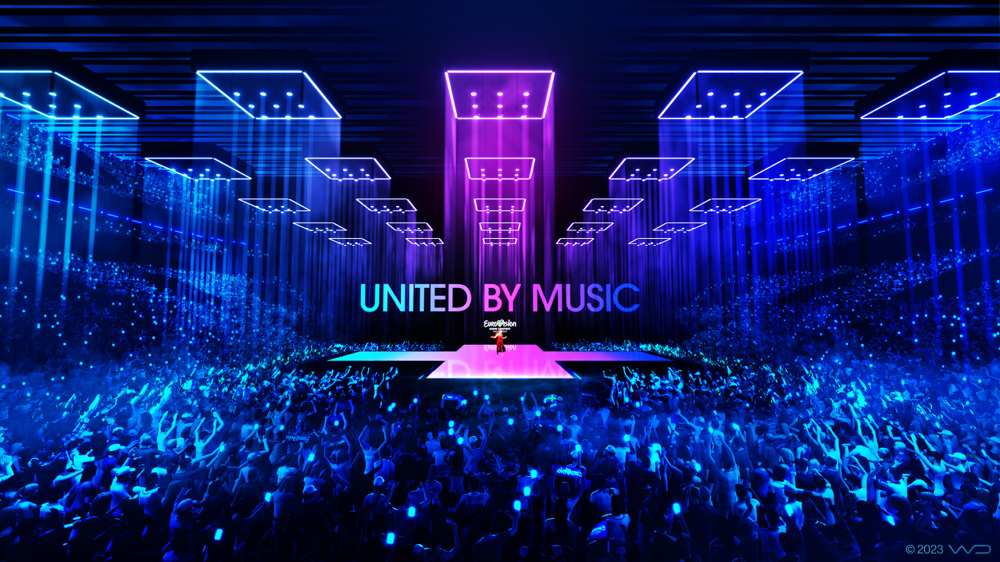
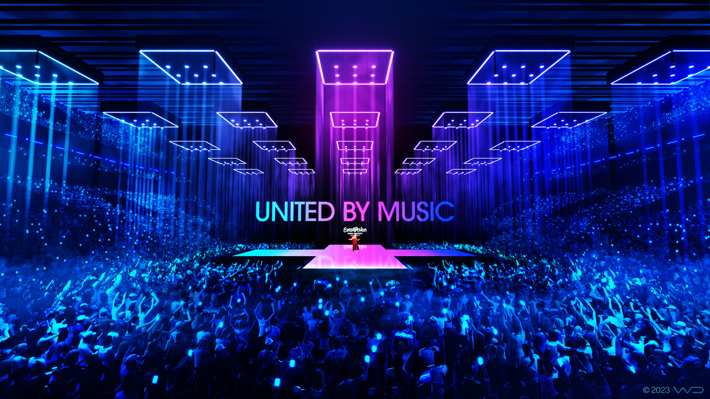

HISTORY
The Eurovision Song Contest, which began in 1956, originated as a technical experiment in television broadcasting. The concept of a live, simultaneous, transnational broadcast was groundbreaking in the late 1950s. The inaugural contest, held on May 24, 1956, featured seven nations: the Netherlands, Switzerland, Belgium, Germany, France, Luxembourg, and Italy. Switzerland's Lys Assia won with her song "Refrain".
Over the years, Eurovision evolved into a week-long, technologically innovative spectacle. The idea for the contest was born from the European Broadcasting Union (EBU), created in 1954 to facilitate cost-effective programming exchanges among European nations. Marcel Bezençon of the Swiss Broadcasting Corporation proposed the Eurovision Network, but the concept of the song contest itself came from Italy's national broadcaster RAI, inspired by the Festival di Sanremo.
Today, the Eurovision Song Contest remains a dynamic and beloved event, drawing millions of viewers worldwide each year.
PARTICIPANTS
This years top 15 finalists were:
- Nemo - The code (Switzerland) 🇨🇭
- Baby Lasagna - Rim Tim Tagi Dim (Croatia) 🇭🇷
- Alyona Alyona & Jerry Heil - Teresa & Maria (Ukraine) 🇺🇦
- Slimane - Mon amour (France) 🇫🇷
- Eden Golan - Hurricane (Israel) 🇮🇱
- Bambie Thug - Doomsday Blue (Ireland) 🇮🇪
- Angelina Mango - La noia (Italy) 🇮🇹
- LADANIVA - Jako (Armenia) 🇦🇲
- Marcus & Martinus - Unforgettable (Sweden) 🇸🇪
- Iolanda - Grito (Portugal) 🇵🇹
- Marina Satti - Zari (Greece) 🇨🇭
- ISAAK - Always on the run (Germany) 🇩🇪
- TALI - Fighter (Luxembourg) 🇱🇺
- Silvester Belt - Luktelk (Lithuania) 🇱🇹
- Silia Kapsis - Liar (Cyprus) 🇨🇾
Learn more about the contestants by clicking here.
RULES
SONG REQUIREMENTS
- RELEASE DATE
The songs (lyrics and music compositions) submitted to represent the country of each Participating Broadcaster’s country in the ESC must be original and must not have been released and/or publicly performed in part or in full before 1 September 2023 (the “Release Date”).
In case the song submitted has been made available to the public, for example, but not limited to, on online video platforms, social networks or (semi-) publicly accessible databanks and/or performed publicly, for example but not limited to during concerts, prior to the Release Date the Participating Broadcaster must inform the ESC Executive Supervisor, who shall have authority to evaluate whether the song remains eligible for participation in the Contest.
In particular, the ESC Executive Supervisor shall assess whether such disclosure prior to the Release Date is likely to give to the song an advantage in the Contest vis-à-vis the other participating songs.
The ESC Executive Supervisor shall have authority to authorise or deny participation of a song which may have been available to the public as described above. The ESC Executive Supervisor shall consult the Reference Group in case of doubt.
- DURATION
- to submit to the EBU a song complying with the requested duration hereunder by the prescribed deadline or
- to (have) perform(ed) on stage, a song complying with the requested duration hereunder.
- LANGUAGE
Each Participating Broadcaster is free to decide the language in which its Contestant(s) will sing.
SONG PERFORMANCES AT THE ESC
- PERFORMANCES IN THE SHOWS
- LIVE PERFORMANCES ON STAGE (AND BACKING TRACKS)
The stage performance shall be identical in all second (Jury) Dress Rehearsals and during the live Shows.
All songs shall be performed live on the stage in the Host City at the selected Venue with recorded Backing Tracks.
No on-stage Contestant (whether Lead Singer(s), or dancers) shall be allowed to lip-sync in such a way as to give the impression that they are singing when they actually are not.
No pitch-correction (e.g. Auto-tuning) for live vocals shall be allowed in any case for the live Act performances on stage.
Plugging instruments to play live on stage shall not be allowed. The Host Broadcaster and the ESC Executive Supervisor shall verify respect for this rule.
CONTESTANTS (ELIGIBILTY CRITERIA)
- MAXIMUM NUMBER OF CONTESTANTS
- AGE OF CONTESTANTS
- COUNTRY REPRESENTATION
Each performance may consist of a maximum of six artists on stage. No live animals shall be allowed on stage.
All Contestants and artists competing in a Semi-Final must be aged at least 16 on the day of the Final. All Contestants and artists competing only in the Final must be aged at least 16 on the day of the Final.
No Contestant and/or artist may compete for more than one country in the ESC in a given year.